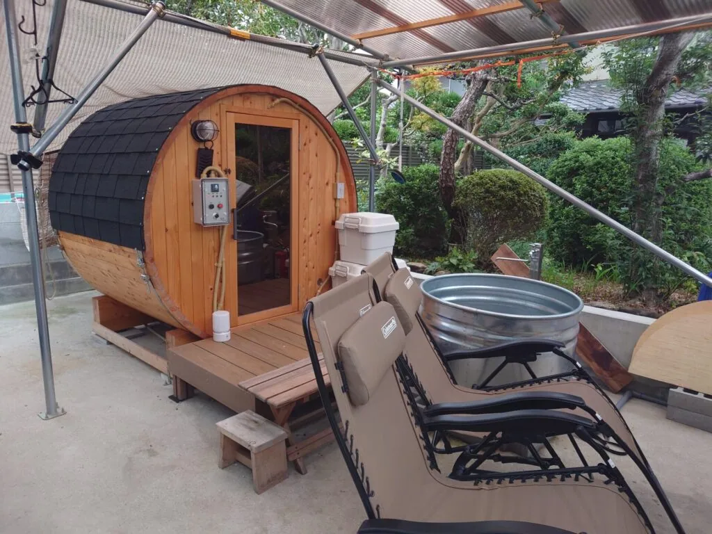

兵庫県姫路市の閑静な住宅街に、Rink SAUNAの国産バレルサウナを導入されているお宅があります。お庭の空きスペースを有効活用し、2〜4名で利用できるコンパクトなサイズながら本格的なフィンランドサウナを日常的に楽しんでいるそうです。
都市ガスを利用しているこちらのご家庭では、電気ストーブではなく、ガスストーブを選択され、施設のようなサウナ体験を自宅で実現しました。
「自宅でサウナに入りたい。」という憧れから始まったサウナライフは、今では家族みんなが楽しむ日常のひとときになっています。
価格以上の満足感を提供する国産ヒノキのバレルサウナ

「家でサウナに入れたらいいな〜」というシンプルな思いからバレルサウナを探し始めたお客様は当初、価格重視で複数のメーカーさんと商談しておりました。その中で、納期が不透明だったり、信頼性に不安を感じる輸入品サウナの話を聞き、次第に「長く使えること」を重視する方針へとシフト。そして、コストパフォーマンスと品質の高さで選ばれたのがRink SAUNAでした。
選ばれた理由には、国産ヒノキ材の耐久性と心地よい香り、さらに購入後も安心の充実したサポート体制が挙げられます。また、導入コストを抑える工夫として、バレルサウナ本体と熱源のみのミニマムセットを選択し、塗装や組立はDIYでチャレンジ。ご家族全員で付属の組立マニュアルとYouTube動画を参考に、約1日かけて完成させたそうです。
現在では、ご家族や近隣の親戚と一緒に、週2〜3回の頻度で本格的なフィンランド式サウナを自宅で満喫中。忙しい日常の中で、心身ともにリフレッシュできる贅沢な時間を過ごされています。
国産ヒノキとガスストーブで実現する贅沢な“0秒サウナ”
今回導入されたのは、家庭用として人気のコンパクトサイズ「i – barrel Small R15」バレルサウナです。国産のヒノキ材を贅沢に使用し、洗練された高級感が漂う作りが特徴です。また、室内照明が標準装備されており、昼夜問わずすぐにサウナを楽しめる環境が整っています。
また、こちらの家庭は元々都市ガスを利用しており、電気ストーブよりも高温が出せるガスストーブを採用。短時間で室温を効率的に上げることができるため、すぐにサウナを楽しむことができます。燃料効率の高さも大きな魅力で、より手軽に快適な温度で「0秒サウナ」を実現できます。
ガスストーブでも、本格的なロウリュを楽しむことができ、ヒノキの香りに包まれた心地よい空間で、日常的に贅沢なリフレッシュ時間を楽しんでください。
高品質の国産ひのき・バレルサウナ「Rink SAUNA」
Rink SAUNAは、高品質な国産ヒノキ材を使用したバレルサウナで、「ワクワクと感動」をご提供します。ヒノキの香り・デザイン・耐久性を重視した設計で、本格的なサウナ体験を楽しめます。
6次産業化によるひのき木材の安定調達と国内製造により、高いコストパフォーマンスと優れた高品質、短納期を実現しています。
また、電気・薪の他にも、バレルサウナ仕様に改良したバレルサウナ用ガスストーブも取り扱っています。詳しい仕様や設置方法が知りたい方は、お気軽にお問い合わせください。